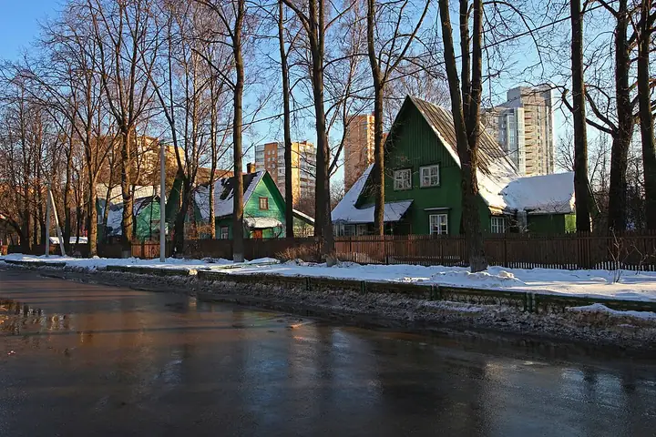

Фото: A.Savin, CC BY-SA 3.0 · Wikimedia Commons
Исторический посёлок · САО
Посёлок «Сокол»
Посёлок художников 1920-х: деревянные дома и тихие улицы прямо у метро.
- ₽ · до 1 500 ₽ на человека
- в 2 планах
Позвать сюда: Посёлок «Сокол»Открыть в каталоге: Посёлок «Сокол»Маршрут до места: Посёлок «Сокол»
Адрес и детали
- Адрес
- ул. Сурикова, посёлок «Сокол»
Открыть на Яндекс Картах (в новой вкладке) - Метро
- м. Сокол
- Округ
- Север (САО)
- Цена
- до 1 500 ₽ на человека
- Проверено
- работает — проверили в октябре 2026
Планы с этим местом 2
- Посёлок «Сокол» · Исторический посёлок · м. Сокол
- 22 минуты пешкомClara · Кофейня
Тихие улицы посёлка «Сокол» с деревянными домами 1920-х, а потом Clara у «Октябрьского Поля»: мест много, раф с лавандой и канеле — можно сидеть и говорить часами.
Открыть план: Посёлок художников и кофеПозвать сюда: Посёлок художников и кофе
Фото: A.Savin, CC BY-SA 3.0 · Wikimedia Commons
- Посёлок «Сокол» · Исторический посёлок · м. Сокол
- 12 минут пешкомF5 Сокол · Компьютерный клуб
Деревянные дачи 1920-х посреди города, а потом сертифицированные NVIDIA компы F5 у самого метро.
Открыть план: Посёлок Сокол и F5Позвать сюда: Посёлок Сокол и F5
Фото: A.Savin, CC BY-SA 3.0 · Wikimedia Commons

Похожие рядом
Что ещё рядом
Как позвать
- Выбери план, место или событие — в карточке адрес, цены и маршрут в Яндекс Картах.
- Нажми «Позвать сюда» — соберётся приглашение-игра для свидания или голосование для компании.
- Отправь ссылку в любой мессенджер: тебе ответят, а компания отметит, куда и когда может. Бесплатно и без регистрации.